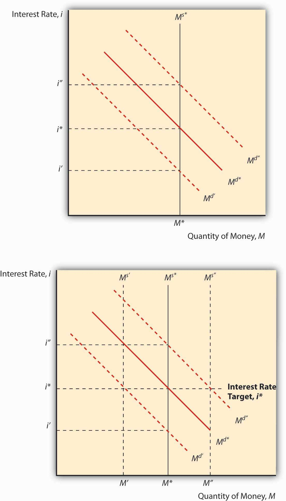

Once a central bank has decided whether it wants to hold the line (no change [Δ]), tighten (increase i, decrease or slow the growth of MS), or ease (lower i, increase MS), it has to figure out how best to do so. Quite a gulf exists between the central bank’s goals (low inflation, high employment) and its tools or instruments (OMO, discount loans, changing rr). So it sometimes creates a target between the two, some intermediate goal that it shoots for with its tools, with the expectation that hitting the target’s bull’s-eye would lead to goal satisfaction:
TOOLS→TARGET→GOALIn the past, many central banks targeted monetary aggregates like M1 or M2. Some, like Germany’s Bundesbank and Switzerland’s central bank, did so successfully. Others, like the Fed, the Bank of Japan, and the Bank of England, failed miserably. Their failure is partly explained by what economists call the time inconsistency problem, the inability over time to follow a good plan consistently. (Weight-loss diets suffer from the time inconsistency problem, too, and every form of procrastination is essentially time inconsistent.) Basically, like a wayward dieter or a lazy student (rare animals to be sure), they overshot their targets time and time again, preferring pleasure now at the cost of pain later.
Another major problem was that monetary targets did not always equate to the central banks’ goals in any clear way. Long lags between policy implementation and real-world effects made it difficult to know to what degree a policy was working—or not. Worse, the importance of specific aggregates as a determinant of interest rates and the price level waxed and waned over time in ways that proved difficult to predict. Finally, many central banks experienced a disjoint between their tools or operating instruments, which were often interest rates like the federal funds, and their monetary targets. It turns out that one can’t control both an interest rate and a monetary aggregate at the same time. To see why, study Figure 17.1. Note that if the central bank leaves the supply of money fixed, changes in the demand for money will make the interest rate jiggle up and down. It can only keep i fixed by changing the money supply. Because open market operations are the easiest way to conduct monetary policy, most central banks, as we’ve seen, eventually changed reserves to maintain an interest rate target. With the monetary supply moving round and round, up and down, it became difficult to hit monetary targets.
Figure 17.1
Central banks can control i or MS, but not both.
In response to all this, several leading central banks, beginning with New Zealand in 1990, have adopted explicit inflation targets. The result everywhere has been more or less the same: lower employment and output in the short run as inflation expectations are wrung out of the economy, followed by an extended period of prosperity and high employment. As long as it remains somewhat flexible, inflation targeting frees central bankers to do whatever it takes to keep prices in check, to use all available information and not just monetary statistics. Inflation targeting makes them more accountable because the public can easily monitor their success or failure. (New Zealand took this concept a step further, enacting legislation that tied the central banker’s job to keeping inflation within the target range.)
What do you think of New Zealand’s law that allows the legislature to oust a central banker who allows too much inflation?
Well, it makes the central bank less independent. Of course, independence is valuable to the public only as a means of keeping inflation in check. The policy is only as good as the legislature. If it uses the punishment only to oust incompetent or corrupt central bankers, it should be salutary. If it ousts good central bankers caught in a tough situation (for example, an oil supply shock or war), the law may serve only to keep good people from taking the job. If the central banker’s salary is very high, the law might also induce him or her to try to distort the official inflation figures on which his or her job depends.
The Fed has not yet adopted explicit inflation targeting, though a debate currently rages about whether it should. And under Ben Bernanke, it moved to what some have called inflation targeting-lite, with a new policy of communicating with the public more frequently about its forecasts, which now run to three years instead of the traditional two.“The Federal Reserve: Letting Light In,” The Economist (17 November 2007), 88–89. As noted above, the Fed is not very transparent, and that has the effect of roiling the financial markets when expectations about its monetary policy turn out to be incorrect. It also induces people to waste a lot of time engaging in “Fed watching,” looking for clues about monetary policy. Reporters actually used to comment on the thickness of Greenspan’s briefcase when he went into Federal Open Market Committee (FOMC) meetings. No joke!www.amazon.com/Inside-Greenspans-Briefcase-Investment-Strategies/dp/007138913X
Why doesn’t the Fed, which is charged with maintaining financial market and price stability, adopt explicit targets? It may be that it does not want to be held accountable for its performance. It probably wants to protect its independence, but maybe more for its private interest (power) rather than for the public interest (low inflation). It may also be that the Fed has found the holy grail of monetary policy, a flexible rule that helps it to determine the appropriate federal funds target.